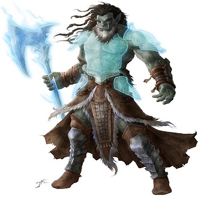
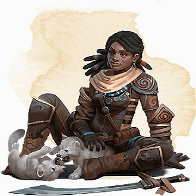
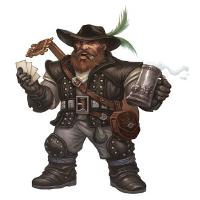
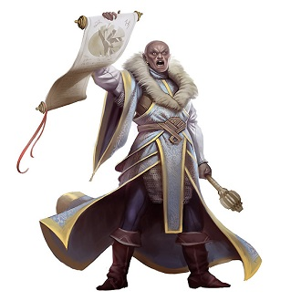
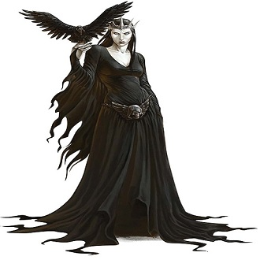
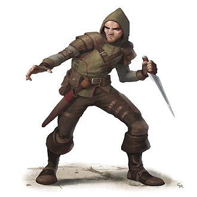

-
Barbáro
Descrição
O Bárbaro é a classe que expressa a pura fúria e força bruta. Ela é frequentemente usada por jogadores que desejam estar na linha de frente do combate, absorvendo dano e devolvendo os golpes com grande intensidade. Sendo um bárbaro você consegue entrar em fúria para aumentar seu poder de combate, resistir a danos físicos e, principalmente, ser o pilar de força em batalhas. Por isso, ele é conhecido como uma classe que domina o campo de batalha com sua presença imponente e capacidade de sobrevivência. Além disso, podemos dizer que ele é único por causa da sua diversidade de subclasses que humanizam esta furiosa classe de D&D 5e.
-
Druida
Descrição
A classe Druida possui uma diversidade muito grande! Por isso, o Druida é um querido de muitos jogadores, pois ele pode conjurar magias ligadas à natureza, curar aliados e controlar o campo de batalha com feitiços que manipulam o terreno e o clima. Além disso, ele tem o poder de transformar-se em criaturas através da magia Forma Selvagem. Dessa forma, ele só precisa ter visto o animal uma vez para poder se transformar nele pelo resto da vida.
-
Bardo
Descrição
Primeiramente, o bardo não é apenas o fanfarrão. O bardo é uma classe que combina magia e habilidades sociais. Portanto, ele consegue ser uma classe de Dungeons & Dragons 5e muito versátil e capaz de se adaptar a diversas situações, tanto em combate quanto fora dele. O Bardo é uma classe para quem gosta de contar histórias, influenciar pessoas e explorar o poder das palavras e da música. Porém, não ache que o Bardo é personagem simples de jogar. Ele possui magia e uma ampla gama de habilidades que requerem um bom entendimento de suas mecânicas e estratégias. O seu atributo principal o Carisma, usado para melhorar suas habilidades de performance e persuasão e potencializar seus feitiços.
-
Clérigo
Descrição
O clérigo! Ah, o clérigo! Essa é uma classe amada e os combeiros amam o clérigo. Primeiramente, essa é uma classe que une fé divina e poder arcana. Além disso, essa classe de D&D 5e é conhecida por sua versatilidade em combate e habilidades de cura, e ficou muito famosa graças a Shadowheart do jogo Baldur’s Gate 3. Cujos marmanjos e marmanjas se apaixonaram pelo seu poder, delicadeza e história complexa que envolve luz e sombra.
-
Bruxo
Descrição
O Bruxo é uma classe de D&D 5e que possui sua magia proveniente de um pacto com uma entidade sobrenatural, como um arquifada, um demônio ou um ser de outro mundo. Dessa forma, o Bruxo fica ligado a essa entidade até o término de seu contrato. Porém, apesar do lado negativo de ficar preso aos favores para uma entidade, você pode usar seus poderes. Assim, isso traz uma combinação única de habilidades mágicas e invocações que são personalizáveis para o Bruxo.
-
Ladino
Descrição
A classe Ladino é para quem gosta de ser um mestre das sombras, andar em silêncio e sumir no vazio. Em D&D 5e, uma das principais características do Ladino é sua habilidade de causar dano adicional com ataques surpresa, conhecido como Ataque Furtivo (logo no 1º nível) . Além disso, ele também é capaz de desarmar armadilhas e abrir fechaduras e de mover-se furtivamente para evitar ser detectado. Portanto, saiba que o Ladino consegue utilizar suas habilidades para influenciar o curso de eventos tanto em combate quanto em situações de roleplay, e isso deixará sua mesa de RPG muito intrigante.